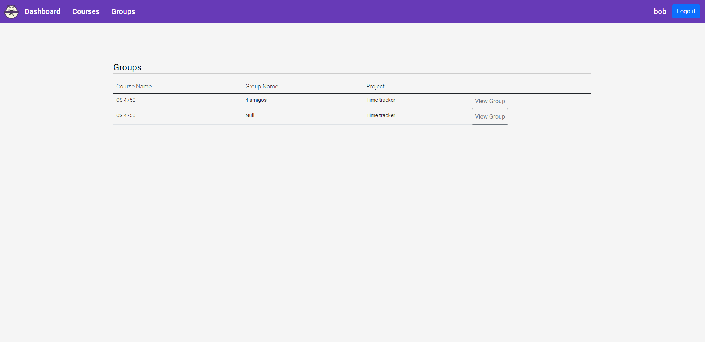

Hangman
Github RepositoryThis was a group project with team members Tage Higley, Ashley Stuart , Hunter Olson, and Denver Jensen. The project started by a previous group. They were able to set up the project, implement some basic visuals, and got the clocking in/out to function.
The user is able to create an account that starts out as a Student user. Each user is able to request to be upgraded to an instructor. All of the requests are handled by the Admin users. Once logged in the user can view their Courses, Projects, and Groups. They are able to view and join any Course, Project, and Group. In a specific group the user can clock in/out or enter their time in manually. After a clock time is added the graphs and tables are updated. They can also edit any of their previous clock times. The Instructor users can create Courses, Projects, and Groups. They also can accept students into their courses. The Admin users can edit all of the information on any user and handles requests for user upgrades and password resets.
I did the majority of the front end design. I also added tables to the Instructor, Groups, Courses, Course and Project pages. Finally I implement all of the functionality for the Group page including clock in/out, graphs, previous clock times, and manual clock times. To get the data for the graphs I created the function below. It basically creates two list, one for the pie chart. If the passed user doesn't have an entry in the list it creates one with the timecard info otherwise it adds the timecard info the the users list.
//Gets the total time for each user and sets the pie chart
getTotalTimes(timeCards: ITimeCard[], user: IUser): void
{
let totalTime = 0;
let name = user.firstName + " " + user.lastName;
timeCards.forEach(timeCard =>
{
let newIn = new Date(parseInt(timeCard.timeIn as string));
let newOut = new Date(parseInt(timeCard.timeOut as string));
let hours = (newOut.getTime() - newIn.getTime())/ 3600000;
let date = (newIn.getMonth() + 1) + "/" + newIn.getDate() + "/" + newIn.getFullYear();
//Date not in list
if(this.lineData.findIndex(value => value.name == date) == -1)
{
this.lineData = [...this.lineData, {name: date, series:[{name: name, value: hours}]}];
}
//Date in list
else
{
//User doesn't have a series yet
// @ts-ignore
if(this.lineData.find(value => value.name == date).series.findIndex(x => x.name == name) == -1)
{
// @ts-ignore
this.lineData.find(value => value.name == date).series.push({name: name, value: hours});
}
//User already has a series
else
{
// @ts-ignore
this.lineData.find(value => value.name == date).series.find(x => x.name == name).value += hours;
}
}
totalTime += hours;
});
this.lineData.sort(function(a,b){
// @ts-ignore
return new Date(a.name).getTime() - new Date(b.name).getTime()
});
this.lineData = [...this.lineData];
this.pieData = [...this.pieData, {name: name, value: totalTime}];
if(this.lineData.length === 0 || this.pieData.length === 0)
{
this.empty = true;
this.chartHeight = "0rem"
}
else
{
this.empty = false;
this.chartHeight = "30rem"
}
}
The challenge I faced with this project was the functionality of the Group page. Working with time I found out is very annoying. I wasn't able to get it to where I wanted it, but it works. I wanted to split their times if their clock time when past the day mark, but I didn't have time. I was able to parse the time given from the form into hours, minutes, and seconds so it could be displayed in the table. I also had to switch the times into UTC so that I could store it in the database.
The tool we used for this project includes Angular 12, NodeJS, Express, Docker, SQLite 3 Database, and Webstorm.
